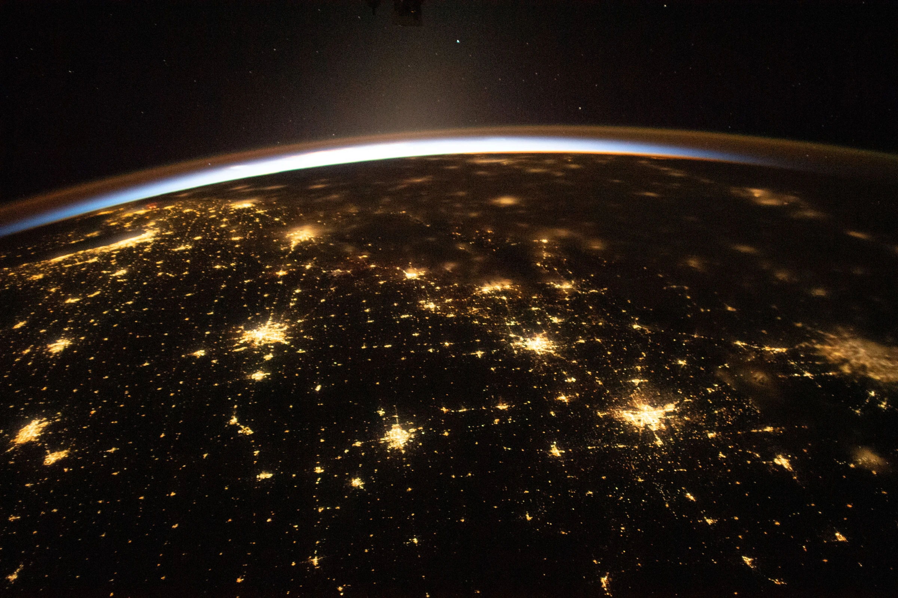
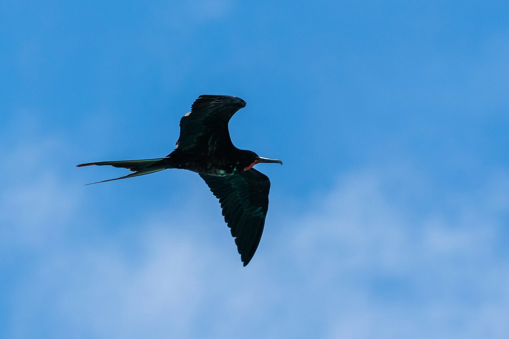
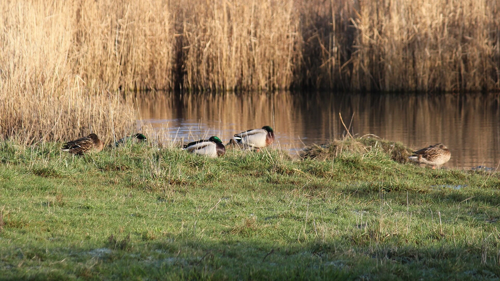
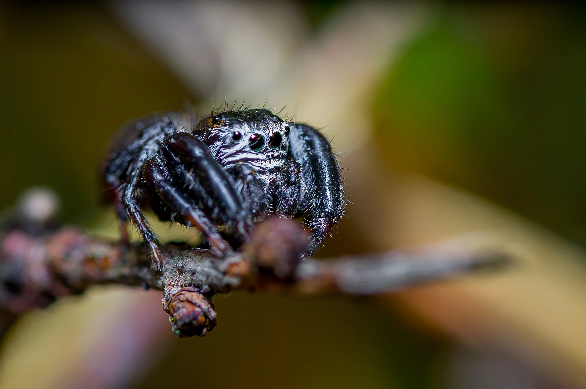

THE WORLD RUNS ON RHYTHM
Before alarms.
There was light.
Sleep is biology. Light is a time signal. Understanding both changes how we think about our nights.
FOLLOW THE RHYTHM ↓01 / THE SCIENCE OF SLEEP
A clock inside
almost every cell.
Your body anticipates the day. It does not simply react to whether the sun is up.
What makes a rhythm circadian?
Circadian means “about a day.” A biological circadian rhythm continues without an external daily cue, has a period near 24 hours, and can synchronize—or entrain—to the environment. A rhythm that only follows meals, activity, or temperature is not by itself proof of an internal clock. These immediate influences can “mask” the underlying rhythm.
The master clock—and the clocks it coordinates
The suprachiasmatic nucleus (SCN), a small structure in the hypothalamus, coordinates daily timing. Individual SCN cells can oscillate, while communication between cells makes the network more precise. Molecular feedback loops build up and inhibit clock components, producing repeated cycles. Many other tissues, including the liver, have their own clocks. Neural, hormonal, behavioral, and feeding signals help keep these systems aligned.
Why your clock needs resetting
The intrinsic human circadian period is close to, but usually not exactly, 24 hours. Without daily time cues, the clock can drift relative to the solar day. Retinal light is the strongest everyday synchronizer. Entrainment establishes a stable relationship between internal biological time and local day and night; it is different from forcing yourself to follow an alarm.
How researchers separate the clock from your routine
In a constant-routine study, researchers control light, posture, food intake, activity, and wakefulness to reveal circadian patterns. In forced desynchrony, participants follow a schedule outside the clock’s normal range of entrainment, allowing sleep/wake effects and circadian phase to be studied separately. A daily pattern in a normal schedule often contains both influences.
Chronotype, age, and biological time
Early and late chronotypes differ in the timing of their internal night. Genetics, intrinsic period, light exposure, age, and behavior all contribute. Adolescents commonly shift later, while older adults tend earlier. Clock time alone cannot tell you someone’s biological time. Melatonin timing under dim light and core-body-temperature rhythms are useful phase markers; melatonin is a signal of biological night, not an on/off switch for sleep.
02 / THE SCIENCE OF SLEEP
Light tells time.
Timing changes everything.
The same light can move the clock earlier, move it later, or make you feel more alert right now.
Chang et al., PNAS (2015) · GENED 1038 course summary & research references ↗
Your eyes do more than see
Light reaches the circadian system through the retina. Melanopsin-containing intrinsically photosensitive retinal ganglion cells (ipRGCs), with input from rods and cones, connect light exposure to the SCN and other responses. Conscious vision and circadian photoreception are related but distinct: some people without conscious light perception retain a circadian response when the relevant retinal pathways remain functional. Shining light on skin is not an established substitute.
The phase-response curve
The effect depends on biological time. Light in the biological evening and early night generally delays the clock; light late in the biological night and morning generally advances it. The transition depends on internal phase, so “morning” on a wall clock can be misleading after travel or shift work. Poorly timed bright light may shift the clock in the opposite direction from the one intended.
Not just brightness—or just blue light
Intensity, duration, spectrum, timing, pattern of exposure, and prior light history all matter. Short-wavelength light can be especially effective under some conditions, but the circadian response is not controlled by a single color. A dim screen and outdoor daylight are very different exposures. There is no universal consumer brightness setting that guarantees a particular phase shift.
Alerting effects versus clock resetting
Light can acutely increase alertness and suppress melatonin during the biological night. A phase shift is a change in the timing of the clock across subsequent cycles. Feeling awake immediately does not show that the clock is aligned, and melatonin suppression alone does not establish a sleep benefit.
Why natural daylight matters
Outdoor light usually provides a much stronger daytime signal than ordinary indoor lighting. A contrast between brighter days and darker nights helps communicate time to the circadian system. Artificial light at night can extend the perceived day. Screen effects depend on timing, duration, brightness, viewing conditions, and the activity itself. In a controlled five-evening study, prolonged evening light-emitting e-reader use delayed circadian timing compared with print; this does not mean every brief screen exposure has the same effect.

03 / THE SCIENCE OF SLEEP
Two forces.
One night.
How long you have been awake and where you are in your circadian cycle jointly shape sleepiness.
Van Dongen et al., Sleep (2003) · GENED 1038 course summary & research references ↗
Sleep pressure: the longer you are awake
Homeostatic sleep pressure rises during wake and falls during sleep. Adenosine is one signal involved; caffeine blocks adenosine receptors rather than replacing sleep. The circadian system adds a separate daily pattern of sleep and wake propensity. Their interaction explains why sleepiness is not a simple hour-by-hour countdown.
Why you can get a second wind
Circadian wake promotion can counter substantial sleep pressure late in the biological day. This wake-maintenance zone helps consolidate wakefulness before the usual bedtime. Later, during the biological night, the circadian drive and accumulated sleep pressure can combine to produce a period of particular vulnerability. You can feel temporarily better while still carrying a sleep debt.
Naps, smart waking, and sleep inertia
A nap can improve alertness, but its timing and duration affect the result and the following night. Sleep inertia is the temporary impairment and grogginess after waking. Prior sleep loss, circadian phase, and the depth of sleep at awakening can influence it. No single sleep stage guarantees a refreshed awakening. DeltaLabs is developing stage-aware nap and wake windows; whether they reduce grogginess in this mask still needs testing.
Sleep stages are active physiology
NREM sleep progresses through N1, N2, and slow-wave N3; REM combines distinctive brain activity, rapid eye movements, and reduced muscle tone. These stages recur rather than form one perfectly repeated 90-minute sequence. Slow-wave activity reflects homeostatic pressure, while REM also has strong circadian regulation. EEG records brain electrical activity and EOG eye movements; a wearable’s stage estimates must be validated against appropriate reference measurements.
The frightening part: you may stop noticing the deficit
In a laboratory study, restricting time in bed to four or six hours for 14 nights produced accumulating performance deficits. Subjective sleepiness did not track the full deterioration. Feeling adapted was not the same as performing normally. The study tested particular schedules and outcomes; it does not give an exact impairment score for every person.
04 / THE SCIENCE OF SLEEP
A sunrise is
a signal.
Wake light brings the idea of a gradual dawn into a morning routine. Its effects depend on how it reaches your eyes and when.
Why wake to light?
Dawn is a natural time cue. A gradual light transition can also provide a gentler sensory cue than an abrupt alarm. These are different goals: a pleasant wake experience is not proof of a clinically meaningful circadian shift. The mask’s diffuser and integrated audio are being developed around the morning experience, with effectiveness to be measured.
What about waking less drowsy?
Light has alerting effects in some experimental conditions, and dawn simulation has been studied as a wake intervention. Results depend on protocol and outcome. Light delivered inside a closed-eye mask cannot be assumed equivalent to an open-eye light box, outdoor daylight, or a particular published study. Exposure, comfort, eye safety, and actual wake outcomes need product-specific validation.
A feature, connected to the wider day
A wake light cannot make up for chronically insufficient sleep. A regular schedule, appropriately timed daytime light, and a sufficiently dark sleep environment all contribute. Use the light-timing chapter to understand the mechanism; an individualized phase-shifting plan depends on biological time and circumstances.

05 / THE SCIENCE OF SLEEP
Your plane arrives.
Your clock follows later.
Jet lag is a mismatch between internal biological time and the new local schedule—not simply fatigue from a flight.
CDC Yellow Book: Jet Lag Disorder · GENED 1038 course summary & research references ↗
Why crossing time zones feels different
After rapid travel, the local light/dark cycle, meals, and social schedule can disagree with your internal night. Sleep loss during travel adds a second problem. Different rhythms can readjust at different speeds. Eastward travel often requires an advance and westward travel a delay, but itinerary, number of zones, and individual timing change the problem.
Why a light plan needs an avoid-light plan
Timed light exposure and light avoidance can help shift the clock. Exposure at the wrong biological time can work against adaptation. An earlier bedtime alone does not instantly reset the SCN. DeltaLabs plans educational app guidance; the mask has not been shown to prevent or eliminate jet lag.
Shift work: repeated misalignment
Night work asks for alertness when the clock favors sleep and daytime sleep when it favors waking. Light exposure on the commute, changing schedules, short sleep opportunities, and social obligations complicate adaptation. Circadian misalignment and insufficient sleep can coexist. Light or a wearable alone cannot solve unsafe work hours or scheduling policy.
Social jet lag and non-24-hour rhythms
A large mismatch between workday and free-day sleep timing can create recurring social jet lag. This is different from non-24-hour sleep–wake disorder, in which timing drifts across days because the clock is not stably entrained. Non-24 is especially relevant to some totally blind people without functional circadian light input; it is a clinical condition, not a lifestyle label.
06 / THE SCIENCE OF SLEEP
The rhythm reaches
beyond sleep.
Circadian timing helps organize hormone release, metabolism, temperature, attention, and many other processes.
NIMH: Seasonal Affective Disorder · GENED 1038 course summary & research references ↗
Seasonal light and SAD
Seasonal affective disorder is a form of depression with a recurring seasonal pattern. Clinically studied bright-light therapy is one treatment option, with specific exposure protocols and considerations that a clinician can assess. DeltaLabs is exploring a personal wake light; it is not established as SAD treatment or a replacement for a therapeutic light box. Light timing, intensity at the eye, duration, and eyelid transmission matter.
Metabolism, immunity, and cardiovascular health
Sleep and circadian regulation influence glucose handling, appetite signals, inflammatory activity, and cardiovascular physiology. Controlled experiments can isolate effects of restricted sleep or circadian misalignment; population studies identify longer-term associations. These evidence types answer different questions. An association between shift work and disease does not show that a consumer device prevents that disease.
Memory, learning, and the active sleeping brain
Sleep supports learning and memory processing; different tasks and stages are associated with different mechanisms. Research on targeted memory reactivation tests whether cues paired with learning can influence later memory during sleep. It does not show that arbitrary audio can teach new complex material overnight. The mask’s integrated audio is a delivery feature, not a demonstrated memory enhancement.
Mental health and sleep influence each other
Sleep problems can affect mood and mental health, and mental-health conditions can disrupt sleep. The relationship is bidirectional and varies by condition. Persistent low mood, excessive sleepiness, or ongoing insomnia deserves appropriate care. A sleep score is not a diagnosis.

07 / THE SCIENCE OF SLEEP
Even in the wild,
sleep survives.
Across species, sleep adapts to danger, migration, and opportunity. It does not simply disappear.
Frigatebirds sleep while flying
EEG recordings in great frigatebirds documented sleep during long ocean flights, including one-hemisphere and both-hemisphere sleep. Birds slept only about 42 minutes per day in flight on average in that study, much less than on land. This remarkable adaptation is not evidence that people can safely train themselves to need almost no sleep. Rattenborg et al. (2016) ↗
A duck can keep one eye on danger
Mallards at the exposed edge of a group increased unihemispheric slow-wave sleep and directed the open eye outward. The finding links sleep organization to predation risk. “Half a brain asleep” is useful shorthand, but the physiology is more specific than an animal simply being half awake all night. Rattenborg et al. (1999) ↗
A tiny spider, a remarkable resemblance
Young jumping spiders, Evarcha arcuata, showed periodic retinal movements and limb twitching during nighttime rest—features consistent with a REM-like state. This is evidence of an intriguing behavioral resemblance, not proof that spiders dream or that their brain state is identical to human REM. Rößler et al. (2022) ↗
Why evolution keeps sleep
Sleep appears in widely different forms across animals, despite the cost of reduced responsiveness. Comparative research connects it to neural maintenance, plasticity, energy use, and ecological demands. No one simple explanation accounts for every species or every stage. The diversity is part of what makes sleep important to study.


08 / THE SCIENCE OF SLEEP
Knowledge for
the waking world.
The course connects physiology to everyday choices, clinical care, and the systems that shape our sleep.
Sleep opportunity, regularity, and age
Sleep need varies across development and among individuals. Duration is only one dimension: timing, regularity, continuity, and daytime functioning also matter. Children, adolescents, adults, and older adults have different typical patterns. Schedule pressure can shorten sleep even when someone has the biological capacity to sleep longer. A mask cannot create the missing hours.
Comfort, darkness, and sound
A comfortable fit and a sleep environment suited to the person can reduce avoidable disruption. Blocking unwanted light and managing noise are practical goals; they do not cure an internal clock disorder. DeltaLabs combines a flexible fit, removable washable cushion, integrated speakers, and a wake-light diffuser so these parts can work together.
When the issue is a sleep disorder
Insomnia, obstructive sleep apnea, restless legs syndrome, narcolepsy, and circadian rhythm sleep–wake disorders have different causes and treatments. Chronic insomnia is commonly treated with cognitive behavioral therapy for insomnia (CBT-I); apnea requires appropriate evaluation and management. Sleep trackers can offer patterns, but cannot replace a clinical history or diagnostic testing. Persistent symptoms should not be dismissed because a wearable reports a good night.
Caffeine, alcohol, medications, and sleep
Caffeine can reduce perceived sleepiness while impairing later sleep, depending on dose, timing, and sensitivity. Alcohol’s initial sedating effect does not make it a reliable way to obtain restorative sleep. Medications have distinct indications, benefits, and risks; altering them belongs in a clinical conversation. These tools act on different mechanisms, not an interchangeable sleep switch.
School, work, and public safety
Later adolescent circadian timing matters when evaluating early school starts. Long shifts and overnight work matter for driving, medical errors, and industrial safety. Policies that allow adequate sleep can be as important as individual behavior. Public messaging should distinguish a person’s feeling of alertness from objective performance and avoid treating sleep loss as a badge of commitment.
FROM UNDERSTANDING TO DESIGN
See the thinking
inside the mask.
EXPLORE EVERY LAYER ↗Independent educational synthesis of Harvard GENED 1038 materials supplied by the founders.
No Harvard endorsement or affiliation is implied. Educational information, not individualized medical advice.